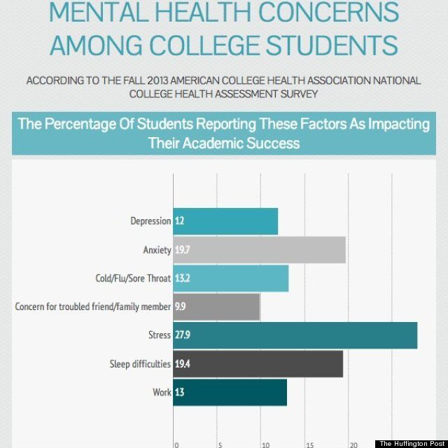
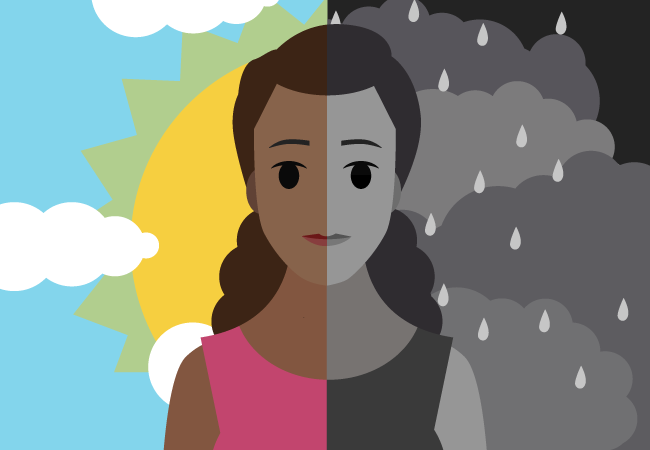
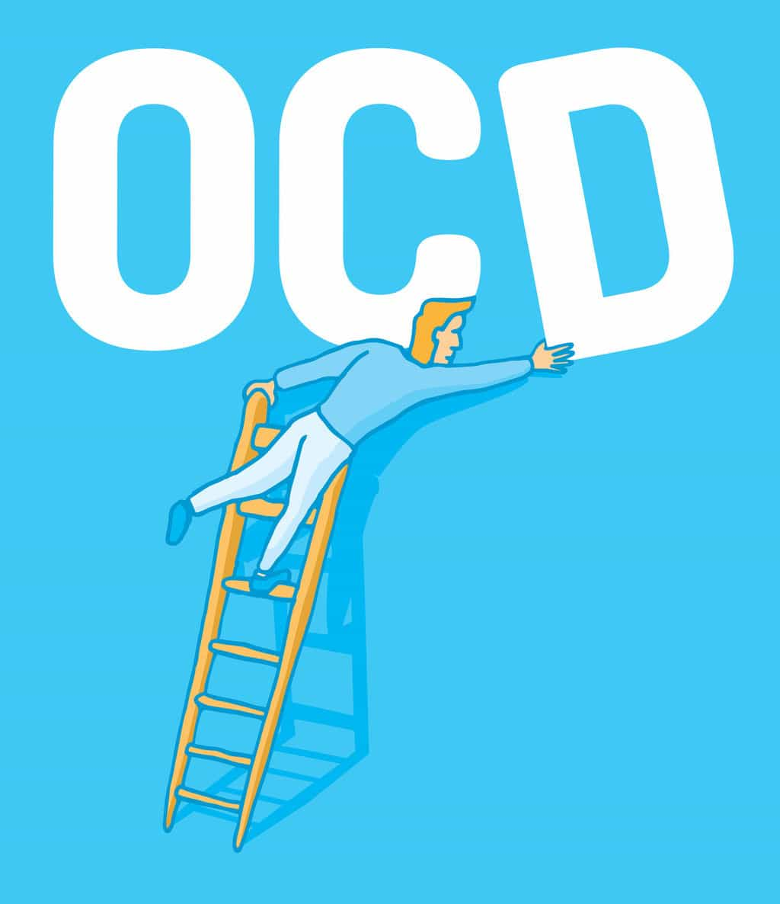
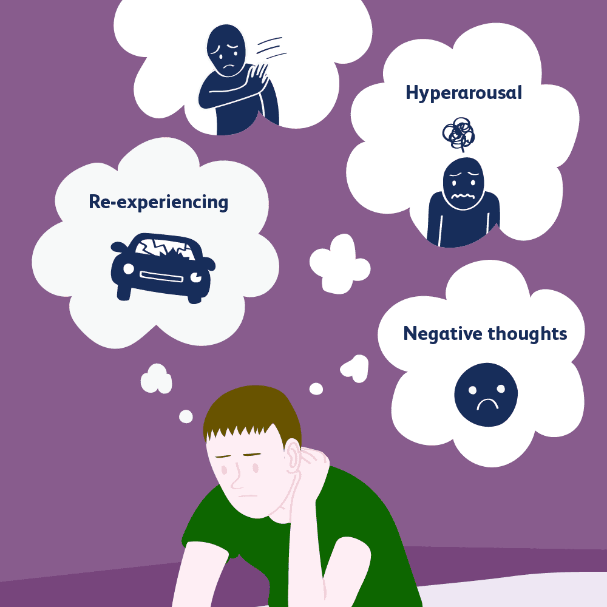

Anxiety Disorder
People with this disorder respond to situations or objects with fear, stress or dread. This interferes with ones daily functioning and can cause physical problems such as rapid heartbeat, sweating, shaking or crying leading to anxiety attacks or fear of social situations. Anxiety Disorder affects over 40 million adults over the age of 18; however 1/3 of these people seek treatment. There is a wide variety of reasons why a person can experience Anxiety Disorder from genetics to life experiences to stress.
Symptoms
Feeling stressed, Irritability, Trouble concentrating, Fearfulness, Sweating/Shaking, Dizziness, Shortness of Breath, Irregular heartbeat, Fatigue, Irregular heartbeat, Headache, Upset stomach
What you should do if you notice signs of Anxiety Disorder in you or a friend
On a college campus, especially as a school as prestigious as the University of Michigan, there are many stress factors both expected and unexpected that students experience through academics, extracurriculars or social situations. In order to reduce this in your life, find people you can trust and talk to about how you are feeling. Writing down your thoughts in a journal is highly recommended as well. Stress relievers such as singing, dancing, reading, etc. can help distract you from that stress or help you express it. Finally, using the resources on/off campus as well as many organizations that offer apps and assistance when it comes to anxiety such as the Anxiety and Depression Association of America, American Psychological Association, Anxiety Resource Center, and the Social Anxiety Association can help you find ways to cope and improve your or your friend's Anxiety Disorder.
Depression
Depression is a very common disease that where people feel helpless, sad, alone, and detached from all their surroundings. This leads them to lose motivation in work, lose interest in activities, distancing themself from their loved ones, etc. It affects how one feels and acts ultimately decreasing ones ability to function. These illnesses occur in the brain and are caused by genetics as well as biological, psychological and environmental factors. Without treatment for students it can lead to dropping out of school or suicide. In 2018, 1 in 5 college students were said to have anxiety or depression.
Symptoms
Sadness, feeling overwhelmed, depressed mood, loss of pleasure in activities, changes in appetite (weight gain/loss), trouble sleeping or sleeping too much, loss of energy (fatigue), feeling hopeless, worthless, powerless, difficulty focusing/concentrating on work/tasks, thoughts of death and suicide.
What you should do if you notice signs of Depression in you or a friend
If you or someone thinks they are experiencing depression, finding someone that can listen is really helpful, being there for a friend that is going through this to tell them they are not alone and having someone like that for you is very important. Offer words of encouragement for someone going through this, not criticism or judgement because they cannot control how they are feeling. Seeking help from a professional if you think it is severe to get their opinion of going about ways of treatment is helpful as well. They can offer therapy, going on medication, meditation, yoga, thought journaling and more. Finally there are many online resources and apps to help understand depression and find ways of helping one cope with it: Anxiety and Depression Association of America, National Institute of Mental Health, ULifeline, American College Health Association and more.
Bipolar Disorder
Bipolar Disorder, also known as manic depression, is a brain disorder that cause extreme shifts in mood swings, activity levels, energy levels and the ability to carry out tasks day to day. People with this disorder experience very intense periods of emotion highs and lows. These mood swings can affect sleep patterns, eating habits, judgement and behavior. There are three things scientists have seen that contribute to bipolar disorder: stress, genetics and brain changes. About 3.2% of college students meet the criteria of Bipolar Disorder. There are several types of bipolar classifications:
Symptoms
Mania can include the following symptoms: Increased activity levels, Irritability, Thoughts racing through ones head, Requiring less sleep, Being more chatty Excessive over-confidence, doing risky things.
Depressive episodes can include the following symptoms: Trouble sleeping or sleeping too much, Trouble staying focused, Feeling sad, empty, hopeless, Having little energy, Forgetting things a lot, Eating too much or too little, Constantly feeling tired or slow, Drastic change in weight, Thoughts or suicide and death.
What you should do if you notice signs of Bipolar Disorder in you or a friend
If you or someone else thinks that they have signs of Bipolar Disorder, there are many ways to cope with this. First, finding a strong support stystem for yourself or your friend, excersize, practicing healthy sleeping and eating habits, avoiding alcohol, drugs, caffiene and keeping a thought journal. Treatments include medication as well as psychotherapy. There are many resources both on and off campus such as meditation centers and counseling psychotherapy centers. However, there are online resources to help understand Bipolar Disorder and help one cope with it. This includes the Depression and Bipolar Support Alliance and the Depression and Bipolar Support Alliance.
Obsessive-Compulsive Disorder (OCD)
OCD is a common long-lasting disorder where a person has uncontrollable reoccuring thoughts (obsessions) and behaviors (compulsions) that one feels the urge to repeat over and over. These obsessions or compulsions can interfere with all aspects of life (work, school, relationships). Ones thoughts and actions are beyond their control. About 1/40 adults in the US has OCD.
Symptoms
Obsessive thoughts can include: Fear of germs, Needing things to be symmetrical and orderly, worries about hurting others or being hurt, Constant awareness of blinking, breathing or other body sensations, Unwanted thoughts (agression or sexual or religious subjects).
Compulsive thoughts can include: Washing hands many times in a row, Performing tasks in a specific order, Need to count things (steps, pencils), Putting items in a exact order, Repetitive checking (light switch, door lock), Demanding reassurance, Fear of using public toilets, shaking hands.
What you should do if you notice signs of OCD in you or a friend

Post-Traumatic Stress Disorder (PTSD)
PTSD is a disorder that develops in people that have had a shocking, scary, dangerous or traumatic event. This can be through nightmares or flashbacks. There can be certain situations or things people see that can trigger this. People that go through traumatic events have difficulty moving past the event or coping with it. With time and self care, however, this can improve. Up to 17% of college students suffer from PTSD.
Symptoms
Flashbacks, Loneliness, Agressive Outbursts, Nightmares, Guilt, Insomnia, Social isolation, Self destructive behavior, Avoiding people/places that remind one of the traumatic event, Negative thoughts, Hopelessness, Difficulty maintaining relationships, Lack of interest in activities, Being easily frightened or startled, Trouble concentrating, Depression, Anxiety and fear.
What you should do if you notice signs of PTSD in you or a friend
Suicide
Suicide is the act where one deliberately takes their own life. Many factors can lead to one feeling the need to take their own life. When one feels hopeless, worthless and in despair and they do not take the steps necessary to improve their mental health, it can lead to this. However, it affects all their loved ones, not just the victim. In 2018, 1 in 5 college students were so stressed they considered suicide as an option for themself. In 2013, suicide was the 2nd leading cause of death for college students in the United States.
Recognizing the signs
Risk factors for suicide include a prior suicide attempt, dealing with a mental health disorder, dealing with a substance abuse disorder, if one talks about feeling trapped, like they are a burden to others, have no reason to live, loneliness and isolating oneself from loved ones, searching online about suicide, family history of mental health disorders or suicide, sexual/physical abuse history, displaying agression.
What you should do if you notice signs of Suicide in you or a friend
Eating Disorders
During college, many people develop eating disorders. Eating disorders are extreme attitudes, emotions and behaviors that revolve around food and weight perceptions. It can cause serious physical health and mental health problems if not treated. Eating disorders occur because of stress, social media/celebrities, low self esteem or trying to look a specific way to be "beautiful". The most common types of eating disorders are Anorexia Nervosa, Bulimia Nervosa and Binge Eating Disorder. About 10-20% of women and 4-10% of men in college suffer from a eating disorder.
Symptoms
Weight loss, Dieting, Obsessing over calories, weight, food or carbohydrates, Skipping meals, Mood Swings, Being uncomfortable eating around family/friends, Concern with body size/shape, Distancing self from loved ones, Concern with body size/shape, Dizziness, Fainting, Insomnia, Menstrual Irregularities, Stomach cramps, Difficulty concentrating, Muscle weakness.
What you should do if you notice signs of Eating Disorders in you or a friend

Addiction
Addiction is defined as dependency and repeated abuse of a drug or substance. In college, alcohol and drugs commonly can turn into an addiction. It is a psychological and physical innability to stop consuming a substance or drug even though it is damaging themself. About 21.3% of young adults use illicit drugs, and about 20% meet the Alcohol Use Disorder criteria.
Symptoms
Restlessness, Impaired vision, coordination, slurred speech, fear, anxiety, paranoia, engaging in harmful events, relationship difficulties, losing interest in activities, hiding substances, suspicious behaviors, change your physical appearance.
What you should do if you notice signs of Addiction in you or a friend